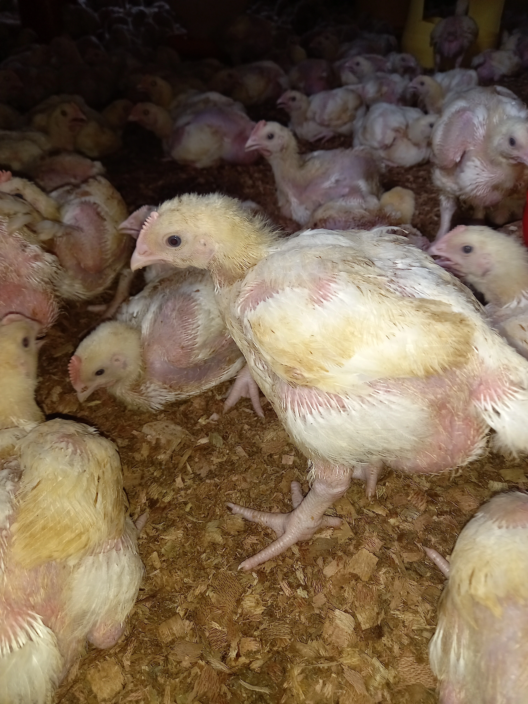

To Start Hatching Your Own Chicks Here's What You Need.
 Starting a chicken farming business can be a profitable venture, but it requires careful planning and investment. One key component of chicken farming is the use of an incubator to hatch eggs. In this article, we'll break down the costs and potential earnings of starting a small-scale chicken farming business using an incubator.
Firstly, let's discuss the cost of the incubator itself. A good-quality incubator will typically cost around 15,000 KSH. This investment is crucial for the success of your business, as it allows you to hatch up to 60 eggs at once over a 28-day period.
- What do incubators do?
- Temperature Control: An incubator maintains a consistent temperature suitable for egg incubation. It replicates the ideal temperature range of 99-101 degrees Fahrenheit (37-38 degrees Celsius).
- Humidity Control: The incubator regulates humidity levels to create an optimal environment for egg incubation. Humidity typically ranges from 40% to 50% during the incubation period.
- Ventilation: Incubators ensure proper air circulation by supplying fresh oxygen and removing excess carbon dioxide through built-in ventilation systems or adjustable vents.
- Egg Turning: To mimic a brooding hen, incubators automatically or manually rotate the eggs at regular intervals, preventing the embryos from sticking to the eggshells and promoting even development.
- Egg Observation: Incubators feature transparent windows or panels that allow you to observe the developing embryos without disturbing the incubation process. This enables monitoring and necessary adjustments as needed.
Next, let's consider the cost of the eggs. Fertilised eggs are more expensive than normal eggs, at a cost of around 25 KSH per egg. For a batch of 60 eggs, this will cost you 1500 KSH. Without fertilised eggs, your eggs will not hatch, so this is an essential expense.
Once the eggs hatch, you will have day-old chicks that can be sold for around 100 KSH each. For a batch of 60 chicks, this will earn you 6,000 KSH after one month. However, it's important to note that this is not your total profit, as there are additional costs to consider.
One such cost is electricity, which is required to power the incubator. This can add up to around 1000 KSH per month. Additionally, it's important to provide your chicks with proper vaccinations to ensure their health and growth. Consult with a local veterinarian to determine which vaccines are necessary, which can cost around 500 KSH.
| Description | Cost (KSH) |
|---|---|
| Incubator | 15,000 |
| Eggs (60) | 1500 |
| Electricity (per month) | 1000 |
| Vaccinations | 500 |
| Total Costs | 18,000 |
| Profit: | |
| Selling 60 day-old chicks (60 x 100 KSH) | 6,000 |
| Profit(excluding incubator) | 3,000 |